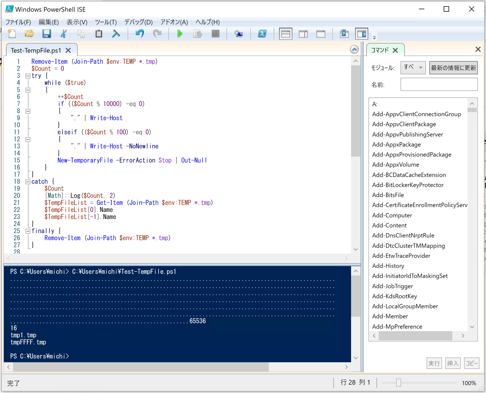

<!DOCTYPE html>
<html lang="ja">

<head>
  <meta charset="UTF-8">
  <meta name="viewport" content="width=device-width, initial-scale=1.0">

  <!-- Twitter summary card -->
  <meta name="twitter:card" content="summary" />
  <meta name="twitter:site" content="@mixnb" />
  <meta name="twitter:title" content="みちのぶのねぐら - 工作室 厚生部 政治局" />
  <meta name="twitter:image" content="https://pages.michinobu.jp/img/logo.png" />

  <link href="/main.css" rel="stylesheet">

  <!-- MathJax: https://www.mathjax.org/ -->
  <script>
    MathJax = {
      tex: {
        inlineMath: [['$', '$'], ['\\(', '\\)']]
      },
      svg: {
        fontCache: 'global'
      }
    };
  </script>
  <script src="https://polyfill.io/v3/polyfill.min.js?features=es6"></script>
  <script id="MathJax-script" async src="https://cdn.jsdelivr.net/npm/mathjax@3/es5/tex-mml-chtml.js"></script>

  <!-- highlight.js -->
  <link rel="stylesheet" href="https://cdnjs.cloudflare.com/ajax/libs/highlight.js/11.7.0/styles/base16/github.min.css">
  <script src="https://cdnjs.cloudflare.com/ajax/libs/highlight.js/11.7.0/highlight.min.js"></script>
  <script>hljs.highlightAll();</script>

  <title>PowerShell の一時ファイルを消さないと 65,536日目に死ぬ - みちのぶのねぐら</title>
</head>

<body onload="onBodyLoading()">
  <!-- Mermaid: https://mermaid.js.org/ -->
  <script type="module">
    import mermaid from 'https://cdn.jsdelivr.net/npm/mermaid@9/dist/mermaid.esm.min.mjs';
    mermaid.initialize({ startOnLoad: true });
  </script>

  <header>
    <a href="/">
      みちのぶのねぐら</a>
    <nav>
      <ul class="categories">
        <li><a href="/t">工作室</a></li>
        <li><a href="/l">厚生部</a></li>
        <li><a href="/p">政治局</a></li>
      </ul>
    </nav>
  </header>
  <div id="main">
    <div class="content"><h1>PowerShell の一時ファイルを消さないと 65,536日目に死ぬ</h1>
<p>Update: 2020-07-11</p>
<p>65,536日って179年？ 長生きかも。</p>
<p></p>
<p>PowerShell には <code>New-TemporaryFile</code> というコマンドがあって、これが便利なのですが、作成した一時ファイルを消し忘れるとたいへんなことになります。試してみましょう。</p>
<p><code powershell>
Remove-Item (Join-Path $env:TEMP <em>.tmp)
$Count = 0
try {
    while ($true)
    {
        ++$Count
        if (($Count % 10000) -eq 0)
        {
            "." | Write-Host
        }
        elseif (($Count % 100) -eq 0)
        {
            "." | Write-Host -NoNewline
        }
        New-TemporaryFile -ErrorAction Stop | Out-Null
    }
}
catch {
    $Count
    [Math]::Log($Count, 2)
    $TempFileList = Get-Item (Join-Path $env:TEMP </em>.tmp)
    $TempFileList[0].Name
    $TempFileList[-1].Name
}
finally {
    Remove-Item (Join-Path $env:TEMP *.tmp)
}
</code></p>
<p>PowerShell で <code>while</code> ってあまり使った記憶が無いな。</p>
<p>この処理にはそこそこ時間がかかって、動いているのかどうか心配になるので "." で進捗を表示します。</p>
<pre class="highlight"><code>PS &gt; .\Test-TempFile.ps1
....................................................................................................
....................................................................................................
....................................................................................................
....................................................................................................
....................................................................................................
....................................................................................................
.......................................................65536
16
tmp1.tmp
tmpFFFF.tmp
</code></pre>

<p><code>New-TemporaryFile</code> は環境変数 <code>TEMP</code> の場所に <code>tmp1.tmp</code> から <code>tmpFFFF.tmp</code> までのファイルをランダムに（たぶん）生成します。
16進数で 4桁だから 2の 16乗、つまり 65,536個までできるということです。</p>
<p>Tag: powershell</p></div>

    <footer id="footer">
      <h2>Latest Updates</h2>
      <ul id="updates"></ul>

      <h2>Contacts</h2>
      <ul id="social-media">
        <li>
          <a rel="me" href="https://toot.blue/@micmaeda"></a>
        </li>
        <li>
          <a href="https://twitter.com/mixnb"></a>
        </li>
        <li>
          <a href="https://www.facebook.com/michinobu.maeda"></a>
        </li>
        <li>
          <a href="https://www.instagram.com/michinobumaeda/"></a>
        </li>
        <li>
          <a href="https://www.tumblr.com/michinobumaeda"></a>
        </li>
        <li>
          <a href="http://mixi.jp/show_profile.pl?id=8734038"></a>
        </li>
        <li>
          <a href="mailto:michinobumaeda@gmail.com"></a>
        </li>
      </ul>

      <h2>Legal Notices</h2>
      <div id="license">
        <div class="license-logo">
          <a rel="license" href="http://creativecommons.org/licenses/by/4.0/"></a>
        </div>
        <div class="license-desc">
          This work is licensed under a
          <a rel="license" href="http://creativecommons.org/licenses/by/4.0/">Creative Commons Attribution 4.0
            International
            License</a>.
        </div>
        <div class="copyright">&copy; 2004-2023 Michinobu Maeda.</div>
      </div>
    </footer>

    <script src="/js/site.js"></script>
</body>

</html>